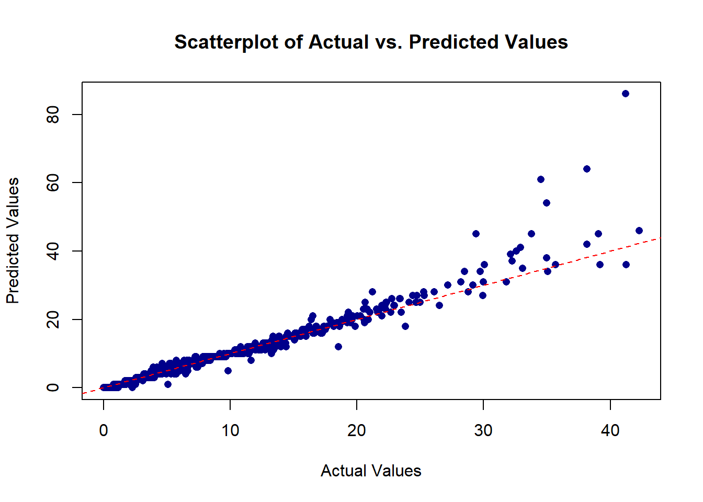

# Random Forest Regression
#Loading dataset
setwd('C:/Users/behro/OneDrive/Desktop/SS-Infrastructure/project')
#Install the packages
library(MASS)
library(lme4)Warning: package 'lme4' was built under R version 4.2.3Loading required package: MatrixWarning: package 'Matrix' was built under R version 4.2.3library(randomForest)Warning: package 'randomForest' was built under R version 4.2.3randomForest 4.7-1.1Type rfNews() to see new features/changes/bug fixes.library(caTools)Warning: package 'caTools' was built under R version 4.2.3#install.packages("randomForest")
#install.packages("pdp")
#install.packages("randomForestExplainer")
#install.packages("ggplot2")
#install.packages("Boruta")
library(Boruta)Warning: package 'Boruta' was built under R version 4.2.3library(randomForest)
library(randomForestExplainer)Warning: package 'randomForestExplainer' was built under R version 4.2.3Registered S3 method overwritten by 'GGally':
method from
+.gg ggplot2library(ggplot2)Warning: package 'ggplot2' was built under R version 4.2.3
Attaching package: 'ggplot2'The following object is masked from 'package:randomForest':
margin# View the structure of the data set (Read in data)
FitData2<-read.csv('Book3.csv')
names(FitData2)#looking at the data [1] "AADT" "Latitude" "Longitude" "yn" "Divided"
[6] "LaneCount" "DGAC" "Latex" "SMA" "PCCP"
[11] "Age" "Friction" "Macro" "IRI" "Gradient"
[16] "Curvature" "LatitudeGPS" "LongitudeGps" "Crash" "lnAADT" #splitting data into training and testing
split <- sample.split(FitData2, SplitRatio=0.7)
train <- subset(FitData2, split=="TRUE")
test <- subset (FitData2, split=="FALSE")
# Fitting the random forest model
set.seed(100) #Setting seed
classRF= randomForest(x=train[-13], y=train$Crash, ntree=500)
classRF
Call:
randomForest(x = train[-13], y = train$Crash, ntree = 500)
Type of random forest: regression
Number of trees: 500
No. of variables tried at each split: 6
Mean of squared residuals: 0.8465309
% Var explained: 95.66#Model prediction
rf_model=predict(classRF, newdata= test[-13])
summary(rf_model) Min. 1st Qu. Median Mean 3rd Qu. Max.
0.0000 0.0191 0.9753 2.0106 2.0130 38.2434 # Create a scatterplot of actual vs. predicted values
plot(classRF$predicted, train$Crash,
main = "Scatterplot of Actual vs. Predicted Values",
xlab = "Actual Values", ylab = "Predicted Values",
col = "darkblue", pch = 16)
# Add a diagonal line for reference
abline(a = 0, b = 1, col = "red", lty = 2)